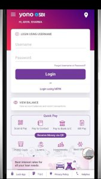
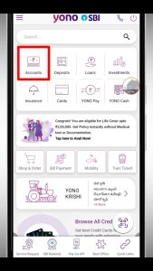
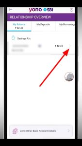
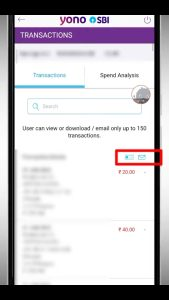
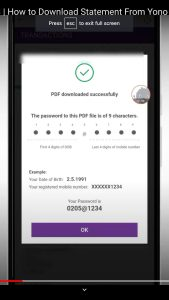

दोस्तों अगर आपका खाता SBI(State bank of India)में है तो आप SBI YONO के बारे में ज़रूर जानते होंगे क्योंकि आजकल लगभग SBI के सभी ग्राहकों के पास SBI YONO application उपलब्ध है।इस पोस्ट में हमलोग जानेंगे की sbi yono se statement kaise nikale?,sbi yono se statement kaise download करें?तो आइए जानते हैं।
SBI Yono Application क्या है?
जब हम बैंकिंग की चर्चा करते हैं, तो आजकल डिजिटल तकनीक का प्रचलन बढ़ रहा है। इसके साथ ही बैंकों ने अपने ग्राहकों को डिजिटल तरीके से सुविधाएँ प्रदान करने के लिए भी कई ऐप्स और ऑनलाइन प्लेटफ़ॉर्म्स विकसित किए हैं। इसी धारणा के साथ भारतीय स्टेट बैंक ने अपने ग्राहकों के लिए “Yono SBI” नामक एक ऑनलाइन पोर्टल विकसित किया है।
Yono का पूरा नाम है “You Only Need One” (आपको सिर्फ एक ही चीज़ की ज़रूरत है)। यह एक डिजिटल बैंकिंग एप्प है इसकी मदद से आप बिना किसी झंझट के बिना बैंक में लाइन लगे हुए,बैंकिंग सेवाओं के लगभग सभी कार्य अपने मोबाइल से कर सकते हैं,जैसे – SBI Account ka statement निकालना,पैसे Transfer करना,Balance चेक करना ,UPI पेमेंट करना,मोबाइल रीचार्ज करना,बिजली का बिल भरना आदि सभी कार्य आप SBI Yono Application की मदद से कर सकते हैं।
Sbi Yono Application में लॉग इन कैसे करें ?
अगर आप भी भारतीय स्टेट बैंक के ग्राहक हैं और Yono SBI के लाभ उठाना चाहते हैं, तो सबसे पहले आपको SBI Yono Application में लॉग इन करना होगा। लॉग इन करने के लिए निम्नलिखित चरणों का पालन करें:
- सबसे पहले आप Play store या Apple App स्टोर पर जाकर SBI yono का official application डाउनलोड करें।
- इसके बाद अपने स्मार्टफोन में Yono SBI एप्प को Open करें।Application Open होने पर, “लॉग इन” बटन पर टैप करें।
- यदि आप पहले से ही SBI Yono Application के ग्राहक हैं, तो अपना User Name और पासवर्ड भरें और “लॉग इन” बटन पर क्लिक करें।
- अगर आप पहले से रजिस्टर्ड नहीं हैं, तो “नए उपभोक्ता” बटन पर क्लिक करें और अपनी विवरण भरकर अकाउंट बनाएं। बाद में लॉग इन करने के लिए Username और पासवर्ड का उपयोग करें।
- आपके सफलतापूर्वक लॉग इन होने के बाद, आपको SBI Yono Application के विभिन्न ऑप्शन और सेवाएं उपलब्ध होंगी।इस तरीके से आप Yono SBI ऐप के माध्यम से आसानी से अपने बैंक खाते के विभिन्न विवरणों तक पहुंच सकते हैं।
Also Read-इसे भी पढ़े
sbi yono se statement kaise nikale?
अगर आप जानना चाहते हैं कि sbi yono se statement kaise nikale ? तो आप निम्नलिखित Steps Follow करेक Yono se Statement Nikal सकते है :-
#1.Login करें :- ऊपर बताये गये तरीक़े से आपको सबसे पहले SBI के Internet Banking के User ID और Password डालकर SBI Yono Application में लॉगिन कर लेना है।
{kind=link}

#2. Account पर जाएँ :- लॉगिन कर लेने के बाद आपको ऊपर के ओर left side में Account के tab पर क्लिक कर देना है।
{kind=link}

#3.Balance देखे :-Account पे क्लिक करने के बाद आपको आपके खाते के अंतिम के कुछ नम्बर और balance दिखाई देने लगेगा।
{kind=link}

#4.Click Passbook or Email Icon :- Right side में आपको यहाँ दो Icon दिखेंगे यह आप Email पर क्लिक करेंगे तो आपके registered ईमेल पर SbI Yono statement भेज दिया जाएगा,अगर passbook पर क्लिक करेंगे तो आपके फ़ोन में Statement download हो जाएगा।
{kind=link}

#5.Download Statement :-जैसे ही आप passbook के tab पर क्लिक करंगे आपके फ़ोन में statement pdf फ़ॉर्मैट में डाउनलोड हो जाएगा।
{kind=link}

#.Email Statement :- अगर आप ईमेल वाले पर क्लिक करेंगे तो वही स्टेट्मेंट pdf बनकर आपके रेजिस्टर्ड ईमेल पर भेज दिया जाएगा।
दोस्तों इस तरह से आप Yono se Statement kaise Nikale ये जाना आपको अगर Yono से स्टेट्मेंट निकालने में कोई परेसनी हो रही है तो नीचे कॉमेंट करें।
sbi statement pdf password kya hai?
SBI Yono se statement या किसी अन्य माध्यम से PDF में स्टेटमेंट डाउनलोड करने के बाद इसे देखने के लिए आपको एक पासवर्ड के आवश्यकता होती है,यानी की यह Pdf फाइल बैंक के द्वारा Password Protected होता है,इसे SBI Statement PDF Password कहते हैं।
how to open sbi statement pdf password?
Sbi Statement Pdf Password पता करने के लिए आपको अपना Registered मोबाइल नंबर और अपना Date of Birth पता होना चाहिए क्योंकि इन्ही दोनों के combination से Sbi Statement Pdf Password बना होता है।
उदाहरण how to open Sbi Statement Pdf Password:- अगर आपका जन्मतिथि 12-12-2023 है और आपका रजिस्टर्ड मोबाइल नंबर – 9000123456 है तो statement पासवर्ड इस प्रकार होगा।
ddmm last four digit of Mobile number यानी आपक पासवर्ड होगा –12123456
SBI Yono App के क्या लाभ हैं ?
आज की भागदौड़ भरी जिंदगी में बैंकिंग सेवाओं को आसान और उपयोगी बनाने के लिए भारतीय स्टेट बैंक (State Bank of India, SBI) ने Yono नामक एक शानदार Application Launch किया है। Yono ऐप से Customers बिना बैंक में गये अपने बैंकिंग खाते को एक्सेस कर सकते हैं,अपने विभिन्न बैंकिंग डिजिटल सेवाओं का उपयोग आसानी से कर सकते हैं।
Yono Sbi के क्या काम है?
SBI बैंक बैलेन्स,रीचार्ज,स्टेट्मेंट आदि के लिए yono का use किया जाता है।
YONO से लोन का स्टेट्मेंट कैसे निकलें?
Account सेक्शन में जाकर आपको लोन अकाउंट पर क्लिक करना है उसके बाद आपके सामने लोन का मिनी स्टेट्मेंट आ जाएगा।